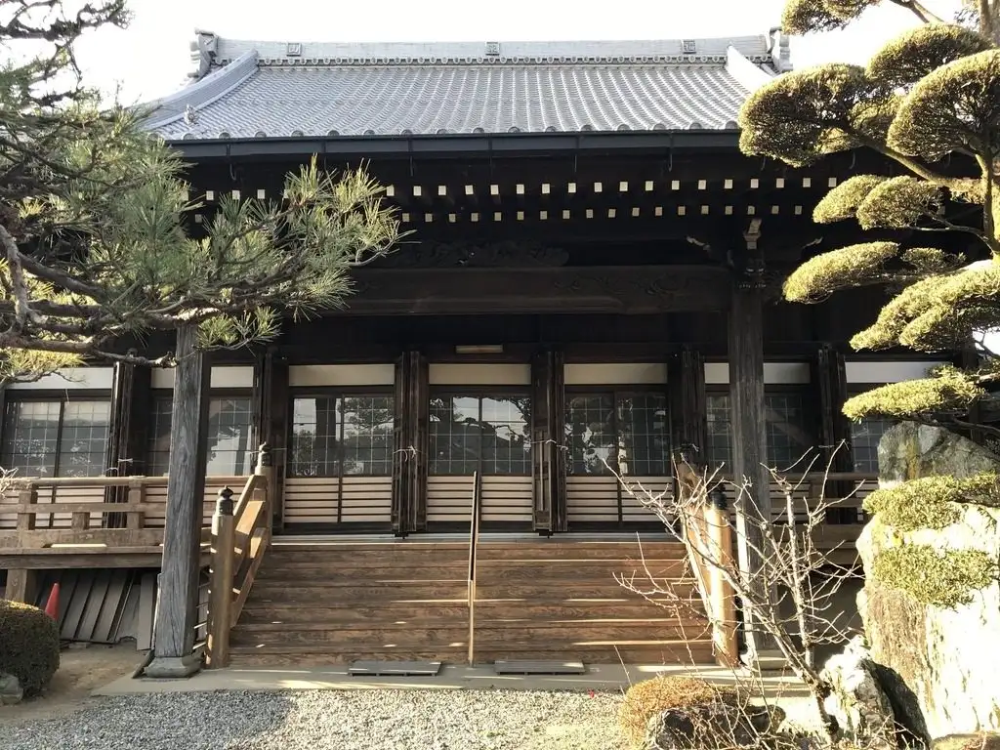
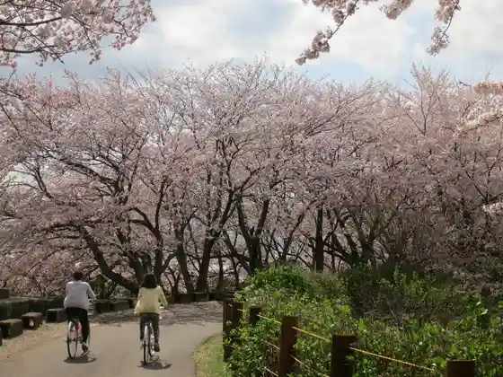

Wanouchi
Wanouchi · Gifu
Wanouchi
Highlighted on the Gifu map.

Sights
Otohime Park
Mori no Wakuwaku no Niwa Wanouchi Mise
Hondo Waju Tsutsumi

Fukuzuka Castle Ruins Fukumitsu Tera
MILAND FARM
Fukuzuka Shiro no Tatakai Ato
Kitazuka